Method Overriding
What is method overriding?
In the Inheritance note, a child’s __init__() replaced the parent’s. That is method overriding, and now we learn it properly.
When a child class defines a method with the same name and same parameters as a method in its parent, the child’s version is used for child objects. This is method overriding.
Overridden method
The parent’s original version.
Overriding method
The child’s new version with the same name.
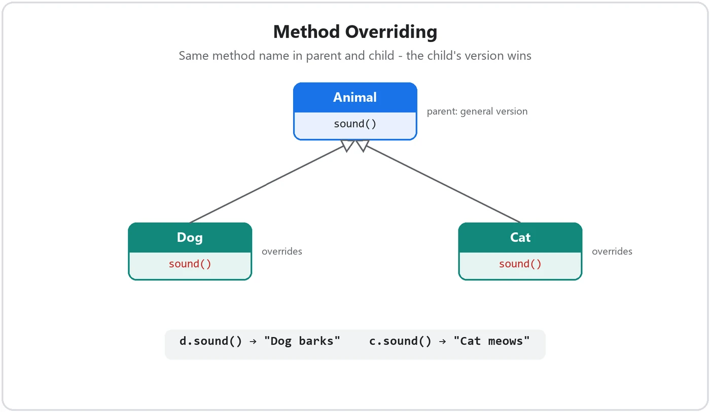
Why we need it
Inheritance gives the child all the parent’s methods, but sometimes the parent’s way doesn’t suit the child. An Animal makes “some sound”, but a Dog barks and a Cat meows. We keep the same method name for the same action, let each child do it its own way, and never need to change the parent or invent names like dog_sound().
The problem without overriding
class Animal:
def sound(self):
print("Animal makes a sound")
class Dog(Animal):
pass
d = Dog()
d.sound()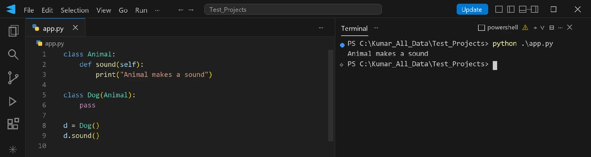
The dog inherits the general sound, which is not correct for a dog.
Overriding a parent method
To override, simply write a method with the same name inside the child class:
class Animal:
def sound(self):
print("Animal makes a sound")
class Dog(Animal):
def sound(self): # overrides Animal.sound()
print("Dog barks")
class Cat(Animal):
def sound(self): # overrides Animal.sound()
print("Cat meows")
a = Animal()
d = Dog()
c = Cat()
a.sound()
d.sound()
c.sound()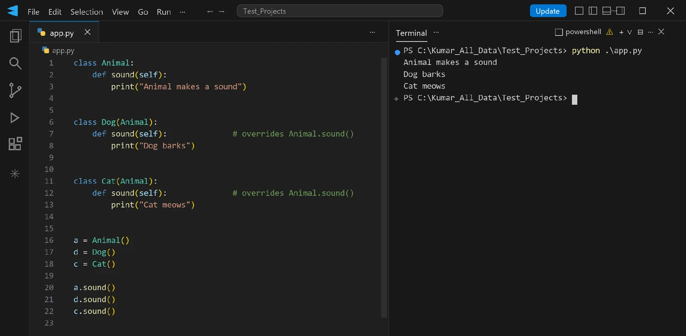
sound().DogandCatboth definesound(), the same name as inAnimal.- For a
Dogobject, Python findssound()inDogfirst, so the dog version runs. - The parent is not changed: an
Animalobject still prints “Animal makes a sound”.
Real-world version: UPI and card payments each process a payment their own way.
class Payment:
def pay(self):
print("Processing the payment")
class UPIPayment(Payment):
def pay(self): # overrides Payment.pay()
print("Paying through UPI")
class CardPayment(Payment):
def pay(self): # overrides Payment.pay()
print("Paying with a debit card")
p = Payment()
u = UPIPayment()
c = CardPayment()
p.pay()
u.pay()
c.pay()Processing the payment
Paying through UPI
Paying with a debit cardLLMClient defines generate(); OpenAIClient and AnthropicClient override it. The rest of the app just calls client.generate(...) and never cares which one it got.Overriding only some methods
Python always searches the object’s own class first, and only then the parent; the search stops at the first match. So a child can override some methods and inherit the rest unchanged.
class Vehicle:
def start(self):
print("Vehicle starts")
def stop(self):
print("Vehicle stops")
class Car(Vehicle):
def start(self): # overridden
print("Car starts with a key")
car = Car()
car.start()
car.stop()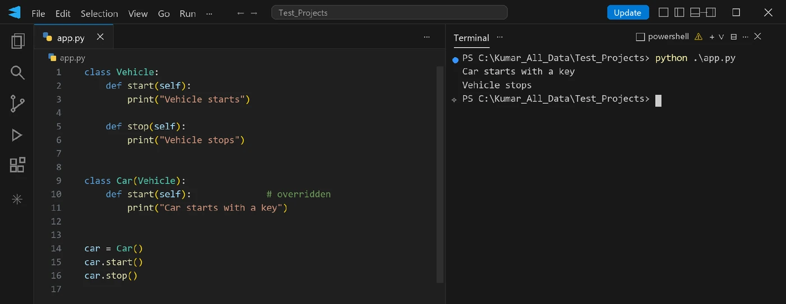
start()is overridden, so theCarversion runs.stop()is not overridden, so the parent’s version runs.
Real-world version: an electric car charges instead of filling petrol, but drives like any car.
class Car:
def refuel(self):
print("Filling petrol")
def drive(self):
print("Car is driving")
class ElectricCar(Car):
def refuel(self): # overridden
print("Charging the battery")
ev = ElectricCar()
ev.refuel()
ev.drive()Charging the battery
Car is drivingOverriding the constructor
__init__() is a method too, so it can be overridden. You saw this in the Inheritance note (Constructors in inheritance, case 3):
class Parent:
def __init__(self):
print("Parent constructor is called")
class Child(Parent):
def __init__(self):
print("Child constructor is called")
c = Child()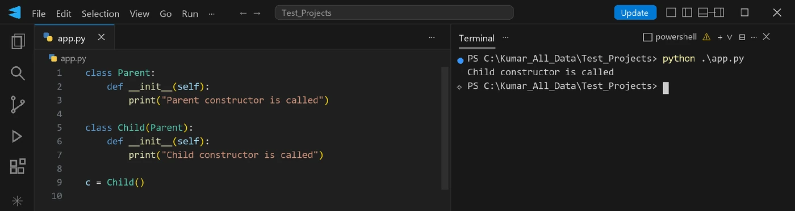
__init__() overrides the parent’s.Only the child constructor runs, because it overrides the parent’s.
Extending a parent method with super().method()
Sometimes you don’t want to replace the parent’s method completely; you want to keep its work and add more. Call the parent’s version with super().method_name() inside the overriding method.
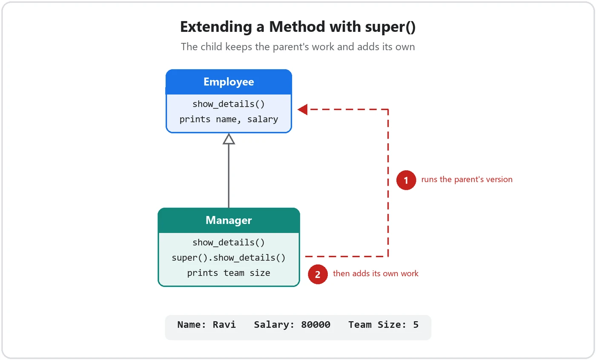
class Employee:
def __init__(self, name, salary):
self.name = name
self.salary = salary
def show_details(self):
print("Name:", self.name)
print("Salary:", self.salary)
class Manager(Employee):
def __init__(self, name, salary, team_size):
super().__init__(name, salary)
self.team_size = team_size
def show_details(self): # overrides and extends
super().show_details() # parent's work first
print("Team Size:", self.team_size)
m = Manager("Ravi", 80000, 5)
m.show_details()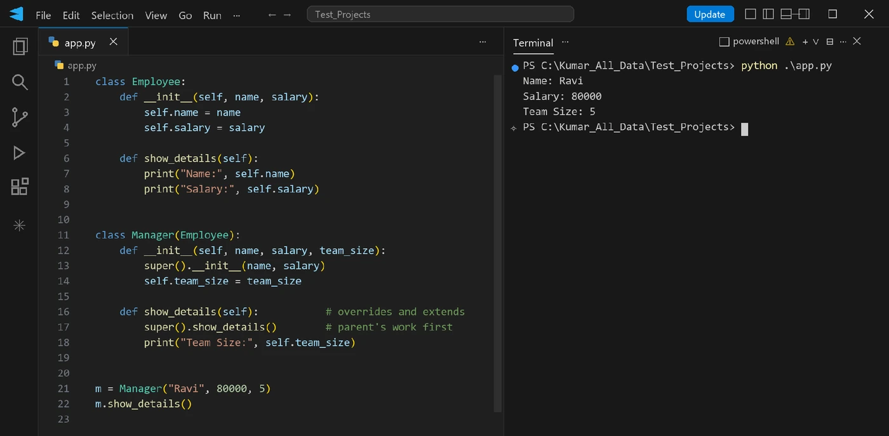
super(), then add your own.Manager overrides show_details(). super().show_details() first runs the parent’s version, which prints the name and salary; then the child adds its own line for the team size. super().__init__(name, salary) does the same for the constructor, as you learned in the Inheritance note. Real-world version: a premium customer’s bill shows the normal details plus loyalty points.
class Customer:
def __init__(self, name, bill_amount):
self.name = name
self.bill_amount = bill_amount
def show_bill(self):
print("Customer:", self.name)
print("Bill Amount:", self.bill_amount)
class PremiumCustomer(Customer):
def __init__(self, name, bill_amount, points):
super().__init__(name, bill_amount)
self.points = points
def show_bill(self): # overrides and extends
super().show_bill() # parent's work first
print("Loyalty Points Earned:", self.points)
pc = PremiumCustomer("Anjali", 2400, 120)
pc.show_bill()Customer: Anjali
Bill Amount: 2400
Loyalty Points Earned: 120Replace vs extend
Replace
Write the method again without super(). The parent’s version does not run. (Dog’s sound().)
Extend
Call super().method() inside it. The parent’s version runs, plus your new code. (Manager’s show_details().)
Overriding vs overloading
The names sound alike but mean different things. Overloading means the same method name with different parameters in the same class. Python does not support it: if one class has two methods with the same name, only the last one is kept, just like constructor overloading in Part 2.
class Calculator:
def add(self, a, b):
return a + b
def add(self, a, b, c): # replaces the first add()
return a + b + c
calc = Calculator()
print(calc.add(1, 2, 3))
print(calc.add(1, 2)) # ERROR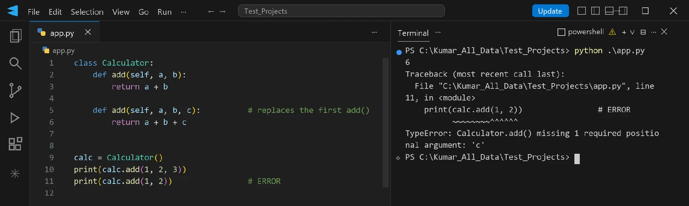
add() replaced the first, so add(1, 2) raises a TypeError.The Python way: default arguments
To call one method with different numbers of values, give a parameter a default value:
class Calculator:
def add(self, a, b, c=0):
return a + b + c
calc = Calculator()
print(calc.add(1, 2))
print(calc.add(1, 2, 3))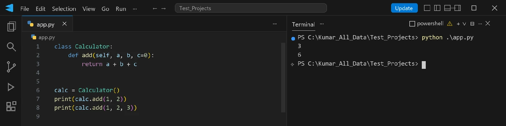
c=0.Real-world version: an order total where the delivery charge is optional.
class OrderCalculator:
def total(self, food_price, tax, delivery_charge=0):
return food_price + tax + delivery_charge
calc = OrderCalculator()
print(calc.total(400, 20))
print(calc.total(400, 20, 40))420
460Key differences
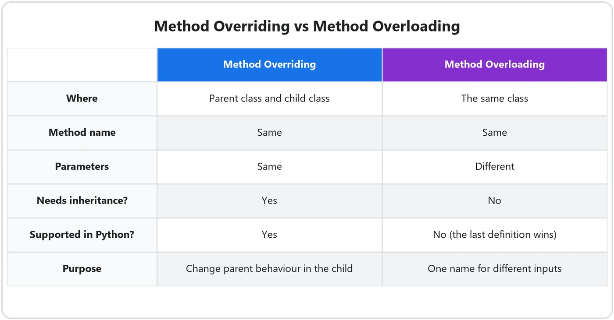
super().method(). __init__() can be overridden too. Python has no overloading; use default arguments.The MRO problem: a toy family
So far each child had one parent. But with two or more parents (multiple or hybrid inheritance) that each override the same method, which version runs? Python answers with the Method Resolution Order (MRO).
- Toy represents all toys.
- SoftToy and PlasticToy are both types of Toy, and both override
play(). - KidsToy has the qualities of both.
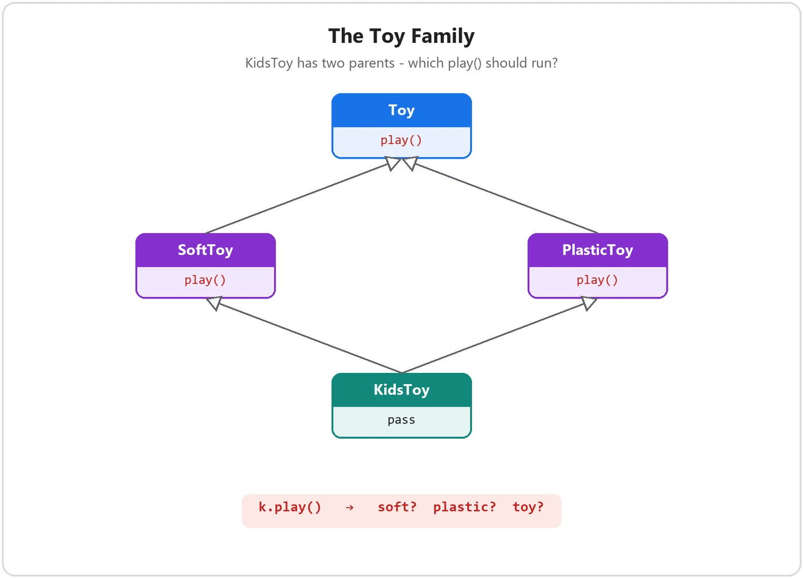
play().class Toy:
def play(self):
print("This is a toy")
class SoftToy(Toy):
def play(self):
print("This is a soft toy")
class PlasticToy(Toy):
def play(self):
print("This is a plastic toy")
class KidsToy(SoftToy, PlasticToy):
passNote: SoftToy and PlasticToy both override the play() method of Toy. KidsToy inherits from both of them, so which overriding play() should run?
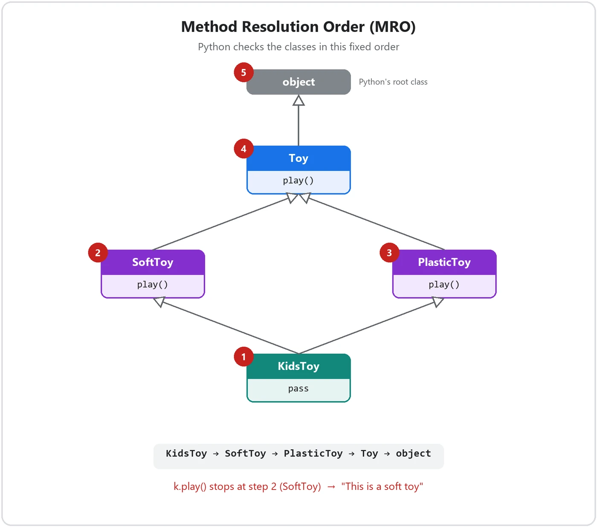
The big question
k = KidsToy()
k.play()play() exists in SoftToy, PlasticToy and Toy. Python can’t choose randomly, because programs must be predictable. This confusion is called method ambiguity, and it can cause bugs that are very hard to find.
What MRO is, and how to work it out
MRO is a fixed search order. When a method is called, Python checks the classes in this order and stops at the first match. It never jumps randomly between classes. Two rules give you the order:
- 1Left to rightFollow the parent order the programmer wrote. In
class KidsToy(SoftToy, PlasticToy), SoftToy is the left parent and PlasticToy the right parent. - 2Depth first, but a shared parent waitsGo up one family line before moving to the next, except that a parent shared by several children is checked only after all of those children. No class is checked twice.
ClassName.mro().Simple classes first
Every class ultimately inherits from object, Python’s root class.
print(Toy.mro())
print(SoftToy.mro())
print(PlasticToy.mro())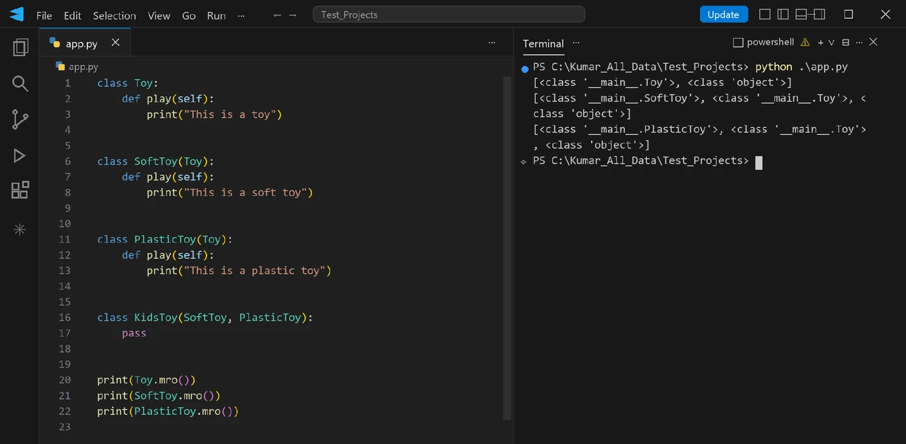
Toy, then object.Toy → object; SoftToy → Toy → object; PlasticToy → Toy → object. Simple inheritance gives a simple order.
KidsToy, step by step (most important)
- 1KidsToyStart with the class itself.
- 2SoftToyGo to the left parent first.
- 3PlasticToyToy is also PlasticToy’s parent, so it must wait: check PlasticToy before Toy.
- 4Toy, then objectNow that all its children are done, the shared parent, then the root.
Final MRO: KidsToy → SoftToy → PlasticToy → Toy → object
print(KidsToy.mro())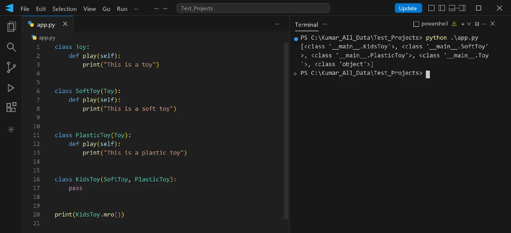
Python’s own output matches the order we worked out by hand. For a given class definition, this order is fixed.
Following the method call
For k.play(), Python checks KidsToy (no play()), then SoftToy (has play()), and stops searching.
Complete program and output
class Toy:
def play(self):
print("This is a toy")
class SoftToy(Toy):
def play(self):
print("This is a soft toy")
class PlasticToy(Toy):
def play(self):
print("This is a plastic toy")
class KidsToy(SoftToy, PlasticToy):
pass
k = KidsToy()
k.play()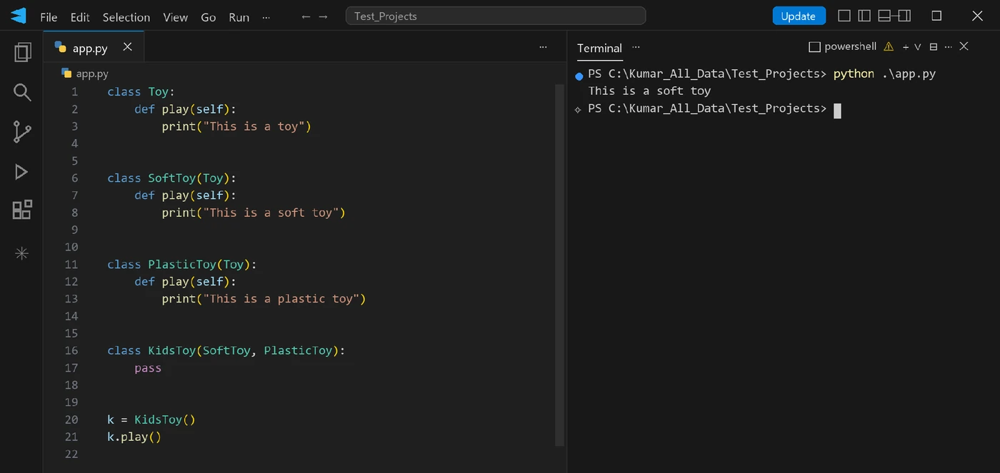
SoftToy comes first in the MRO, so its play() runs.Real-world version: HD and subtitled videos both override play(), and a premium video inherits from both.
class Video:
def play(self):
print("Playing the video")
class HDVideo(Video):
def play(self):
print("Playing the video in HD")
class SubtitledVideo(Video):
def play(self):
print("Playing the video with subtitles")
class PremiumVideo(HDVideo, SubtitledVideo):
pass
print(PremiumVideo.mro())
v = PremiumVideo()
v.play()[<class '__main__.PremiumVideo'>, <class '__main__.HDVideo'>, <class '__main__.SubtitledVideo'>, <class '__main__.Video'>, <class 'object'>]
Playing the video in HDOne more: in a food delivery app, express and scheduled orders both change the delivery time of a normal order.
class Order:
def delivery_time(self):
print("Delivery in 60 minutes")
class ExpressOrder(Order):
def delivery_time(self):
print("Delivery in 20 minutes")
class ScheduledOrder(Order):
def delivery_time(self):
print("Delivery at the scheduled time")
class ScheduledExpressOrder(ExpressOrder, ScheduledOrder):
pass
print(ScheduledExpressOrder.mro())
order = ScheduledExpressOrder()
order.delivery_time()[<class '__main__.ScheduledExpressOrder'>, <class '__main__.ExpressOrder'>, <class '__main__.ScheduledOrder'>, <class '__main__.Order'>, <class 'object'>]
Delivery in 20 minutesTheClass.mro() before you start guessing.Key takeaways
- Multiple and hybrid inheritance create several paths to a method.
- MRO gives Python one fixed order, so it always behaves predictably.
- Left to right, depth first, with a shared parent waiting for all its children. Parent order matters.
- Tip: work out the order by hand first, then verify it with
ClassName.mro().
Key terms
- Method overriding
- A child class defining a method with the same name and parameters as a parent method, so the child’s version runs for child objects.
- Overridden method
- The parent class’s original version of a method that a child has redefined.
- Overriding method
- The child class’s new version of a method that replaces or extends the parent’s.
- super().method()
- A call inside a child method that runs the parent’s version of a method, used to extend rather than fully replace it.
- Replace vs extend
- Replacing rewrites a method without calling the parent; extending calls
super().method()and then adds new code. - Method overloading
- Several methods with the same name but different parameters in one class. Python doesn’t support it: the last definition wins.
- Default argument
- A parameter with a preset value, e.g.
c=0, so one method can be called with fewer arguments; Python’s alternative to overloading. - Method ambiguity
- The uncertainty about which version of a method should run when several parent classes define it.
- Method Resolution Order (MRO)
- The fixed order in which Python searches a class and its ancestors for a method; shown by
ClassName.mro(). - C3 linearisation
- The algorithm Python 3 uses to compute the MRO: left to right, depth first, with a shared parent placed after all of its children.
- object
- Python’s root class; every class inherits from it, so it is always last in the MRO.
Self-check
Pick an answer. You’ll see right away whether it’s correct and why.
Dog(Animal) defines its own sound(). What does Animal().sound() print now?
- The dog’s sound
- The animal’s original sound
- Both sounds
- An error
Overriding changes behaviour only for child objects. The parent class is untouched.
Car(Vehicle) overrides start() but not stop(). What does Car().stop() run?
- Nothing
- Car’s stop()
- Vehicle’s stop()
- An AttributeError
Python checks Car first, doesn’t find stop(), and continues to the parent.
You want Manager’s show_details() to print everything Employee’s prints, plus the team size. What do you write first inside it?
super().show_details()Employee()self.show_details()super().__init__()
That runs the parent’s version (extend). self.show_details() would call Manager’s own method again, forever.
A class defines add(self, a, b) then add(self, a, b, c). What does add(1, 2) do?
- Returns 3 using the first add
- Returns 3 using the second add
- Picks the matching version automatically
- Raises TypeError: missing argument 'c'
Python has no overloading. The second definition replaced the first.
What is the Pythonic way to let one method accept 2 or 3 numbers?
- Write two methods with the same name
- Give the third parameter a default, e.g.
c=0 - Use two classes
- Use a global variable
Default arguments let callers leave out optional values.
For class KidsToy(SoftToy, PlasticToy), both inheriting from Toy, what is the MRO?
- KidsToy, SoftToy, Toy, PlasticToy, object
- KidsToy, PlasticToy, SoftToy, Toy, object
- KidsToy, SoftToy, PlasticToy, Toy, object
- KidsToy, Toy, SoftToy, PlasticToy, object
Left parent first; the shared parent Toy waits until both its children are checked.
How do you see the exact order Python will search for a class C?
C.mro()C.order()super(C)type(C)
mro() returns the list of classes in search order.
Why does Python need an MRO at all?
- To make methods run faster
- To stop classes from having parents
- To allow overloading
- To pick one predictable method when several parents define it
Without a fixed order, multiple inheritance would be ambiguous and unpredictable.
All of it, in one sentence
Overriding lets a child give a parent’s method its own behaviour, either replacing it or extending it with super().method(); Python has no overloading (use default arguments), and with several parents the MRO decides, in one fixed order, which method runs.
— Vishwa Mohan